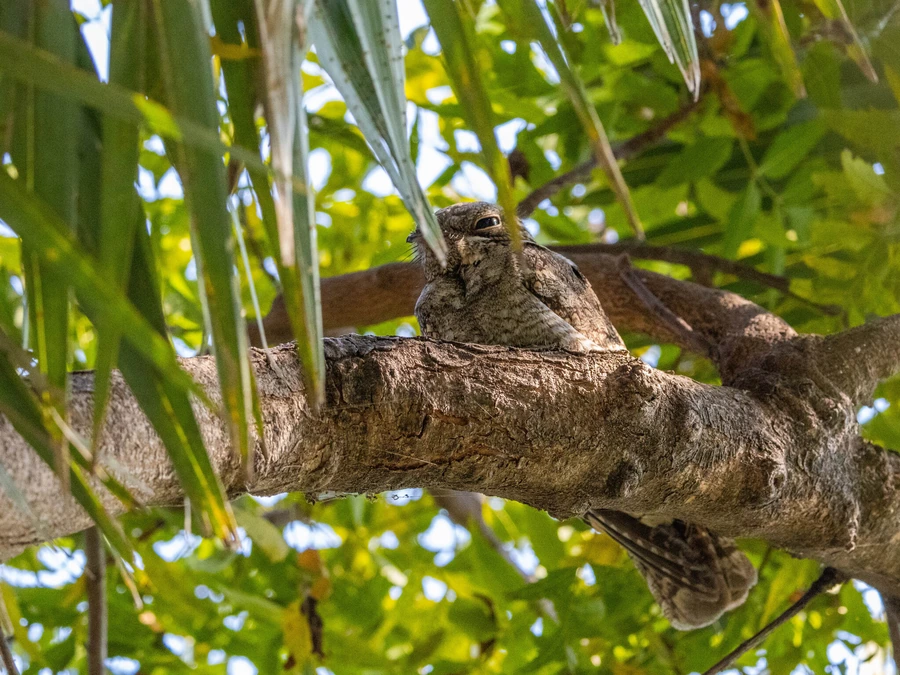

鸟类 · 动物界
普通夜鹰 Caprimulgus indicus

夜行性鸟类，羽色斑驳如树皮，白天贴伏在树枝上几乎无法辨认。黄昏时在空中捕食飞虫，连续鸣叫似发动机的“突突”声。
- 分类
- 门脊索动物门纲鸟纲目夜鹰目科夜鹰科属夜鹰属
- 栖息环境
- 低山疏林、灌丛、草坡、林缘、采伐迹地与农田，偏好有落叶和裸地可供白天贴伏的环境。
- 地理分布
- 东亚、南亚至东南亚；中国东部、南部常见，北方种群冬季南迁。
- 保护级别
- IUCN 红色名录列为无危（LC）；中国列入“三有”陆生野生动物名录。
物种志
普通夜鹰体长约二十七至三十二厘米，体重七十至一百克。通体灰褐、黑褐与白色交织，密布细密斑纹，酷似树皮或落叶；头顶扁平，喙极短而宽阔，嘴角生有发达的刚毛，用于兜捕飞虫。雄鸟翼上有一块白斑，尾羽外侧具白色端斑，飞行时十分醒目。虹膜深褐，脚短小。雌雄羽色相近，雄鸟白斑更大。
它栖息于低山疏林、灌丛、草坡、林缘与农田，白天多贴伏在粗枝或地面，依靠保护色隐蔽，常被误认为树瘤。黄昏和夜间活动，飞行无声而灵活，在空中张大口兜捕蛾类、甲虫、金龟子等昆虫。繁殖期不筑巢，直接把两枚卵产在地面落叶或沙土上。鸣声为连续低沉的“突突突”，节奏均匀，像远处发动机。普通夜鹰分布于东亚至南亚，中国东部和南部常见，北方种群冬季南迁，列入“三有”名录。
形态与习性
- 体长27–32 厘米
- 体重70–100 克
- 食性夜间飞行的蛾类、甲虫等昆虫
- 繁殖地面直接产卵，每窝 2 枚
- 鸣声连续低沉的“突突突”声
- 保护级别IUCN 无危；“三有”动物
趣味知识
- 白天贴伏在树枝上，羽色与树皮几乎完全融合。
- 不筑巢，直接把卵产在地面落叶上。
- 夜间眼睛反射红光，常被车灯照到。